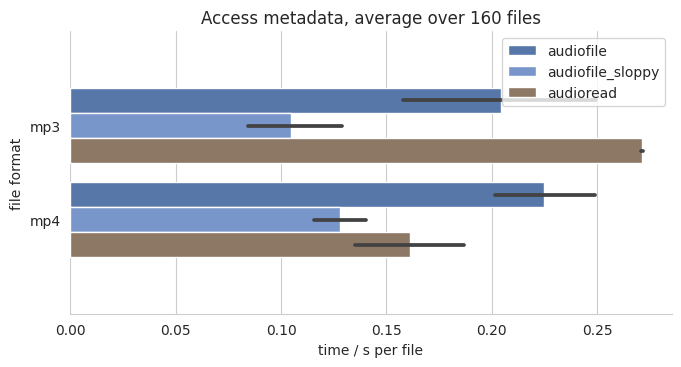

Benchmark¶
We benchmarked several Python audio reading libraries against each other. The procedure follows the python_audio_loading_benchmark project.
Procedure¶
The benchmark loads 160 single channel audio files
and measures the time until the audio is converted
to a numpy.array.
Audio files¶
All files have a sampling rate of 44100 Hz, and contain white noise. They are generated by sox. They differ in length between 1 second and 151 seconds, in 10 seconds steps, including 10 files per length. Leading to an overall of 160 files per audio format. Starting from the WAV files, FLAC, OGG, MP3, and MP4 files were generated using ffmpeg.
Python packages¶
The following Python packages are benchmarked against each other:
aubio 0.4.9
audioread 2.1.9
audiofile0.3.1librosa 0.8.0
scipy 1.5.3
soundfile 0.10.3.post1
sox 1.4.1
scipy and librosa are only tested for reading files, whereas sox is only tested for accessing metadata information. audioread can use three different libraries under the hood: ffmpeg, gstreamer, mad. All three are benchmarked, but results are only reported for the best one.
Reading files¶
The benchmark loads the audio files
and measures the time until the audio is converted
to a numpy.array.
Accessing metadata¶
For benchmark accessing metadata information, the following was requested for every file:
channels
duration
samples
sampling rate
Running the benchmark¶
The benchmark was executed on the following machine:
CPU: Intel(R) Core(TM) i7-8750H CPU @ 2.20GHz x 12
RAM: ‘15.37 GiB’
Hard drive: Samsung SSD 860
Linux: Ubuntu 18.04.5
Python: 3.6.9
To rerun the benchmark yourself, clone the repository and execute:
$ cd docs/benchmark/
$ bash generate_audiofiles.sh
$ # Install dependencies for building wheels
$ sudo apt-get install -y libcairo2-dev libmad0-dev libgirepository1.0-dev python3-gst-1.0
$ # Create and activate Python virtual environment, e.g.
$ # virtualenv --no-download --python=python3 ${HOME}/.envs/audiofile-benchmark
$ # source ${HOME}/.envs/audiofile-benchmark/bin/activate
$ pip install -r requirements.txt.lock
$ bash run.sh
WAV, FLAC, OGG¶
MP3, MP4¶
Accessing metadata¶
aubio, librosa, soundfile, and sox do not support accessing MP3 and MP4 metadata.
For MP3 and MP4 files,
audiofile is not very fast in accessing the metadata.
The main focus was not speed,
but consistent results for number of samples and duration.
This can only be achieved by first converting the file to WAV
as the duration will depend on the used decoder.